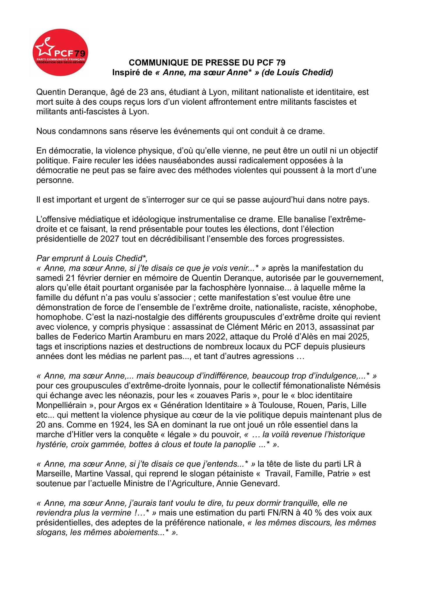
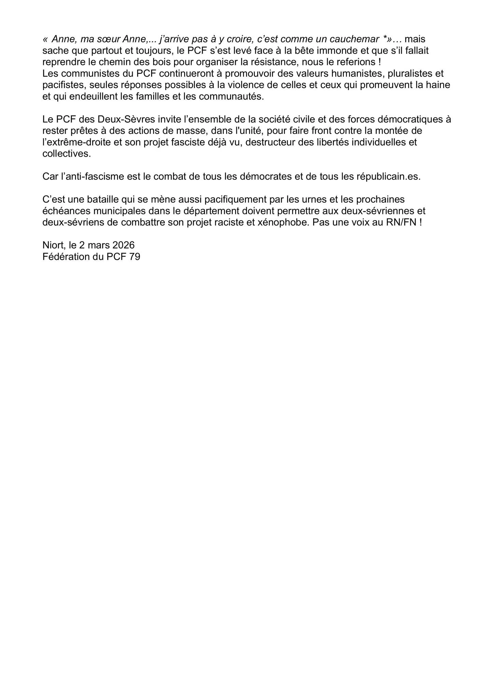

Communiqué fédéral
L’antifascisme est le combat de tous les démocrates et républicains
Date indiquée par Facebook · 2 mars 2026
Repères éditoriaux
Dans notre communiqué du 2 mars, nous condamnons les violences qui ont conduit à la mort de Quentin Deranque. Nous refusons que ce drame serve à banaliser l’extrême droite. Nous appelons les forces démocratiques et la société civile à agir ensemble pour défendre les libertés individuelles et collectives.
Texte conservé avec la publication
L’anti-fascisme est le combat de tous les démocrates et de tous les républicain.es.
Communiqué de presse du PCF79


Sources
Archive rouge · export Facebook · AR-0002-FB-00850
À lire aussi · Affirmer notre antifascisme, le devoir du moment